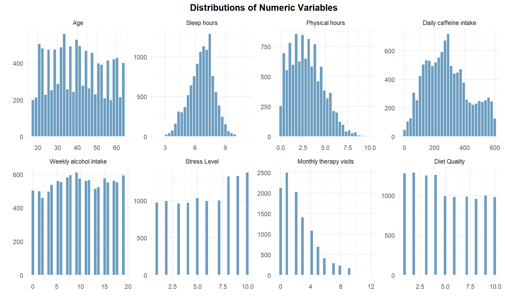
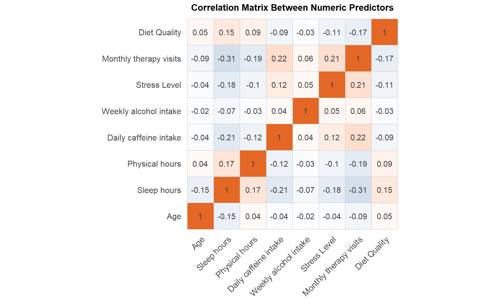
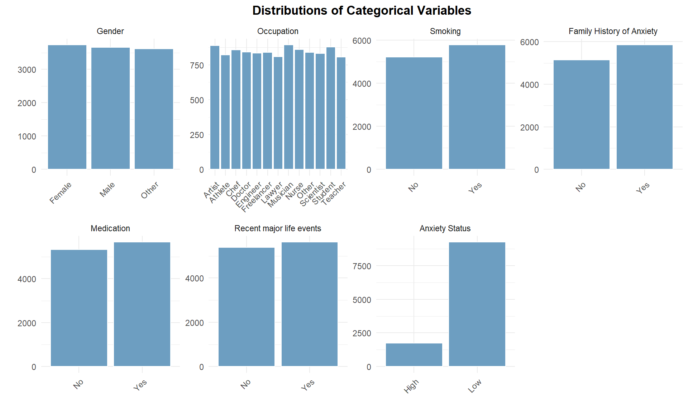
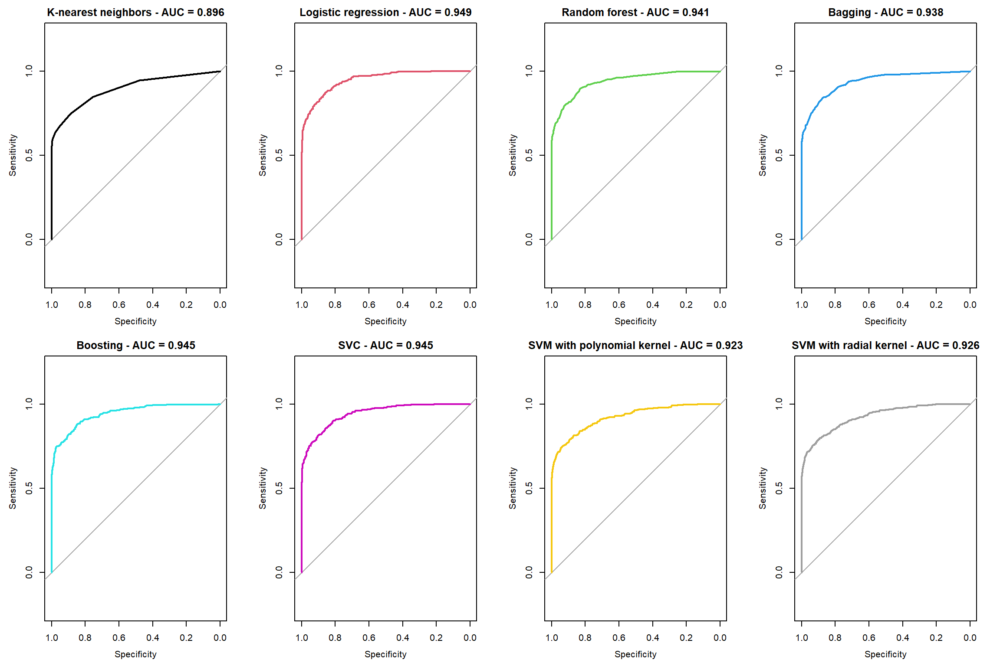

1. Introduction
Social anxiety is a persistent and impairing condition characterized by intense fear of social situations and negative evaluation by others. It can significantly affect daily functioning, relationships, and overall quality of life. While its causes are multifaceted, understanding which specific demographic, lifestyle, and psychological factors contribute to higher levels of social anxiety is critical for informing both clinical practices and future research on how to better support individuals dealing with social anxiety.
2. Methodology
2.1. Data
The dataset was obtained from a self-reported survey and distributed on Kaggle. It contains 11,000 observations and 19 variables, which are coded as follows:
age: Age of the participantgender: Gender of the participantoccupation: Occupation of the participantsleep_hours: Number of sleep hours the participant getphysical_hours: Hours spent on physical activity per daycaffeine_daily: Daily caffeine intake (mg/day)weekly_alcohol: Weekly alcohol consumption (number of drinks)smoking: Smoking status (yes/no)family_anxiety: Family history of anxiety (yes/no)stress_level: Self-reported stress level (scale of 1 to 10)heart_rate: Heart rate (beats per minute)breathing_rate: Breathing rate (breaths per minute)sweating_level: Sweating level (scale of 1 to 5)dizziness: Experience of dizziness (yes/no)medication: Medication use (yes/no)monthly_therapy: Number of therapy sessions attended monthlyrecent_major_events: Recent major life events (yes/no)diet_quality: Diet quality (scale of 1 to 10)anxiety_level: Self-reported anxiety level (scale of 1 to 10)
Several pre-processing steps were needed before moving onto subsequent stages. First, four physiological variables - heart_rate, breathing_rate, sweating_level, and dizziness - were excluded from the set of predictors. This decision was based on the lack of documentation about how and when these measures were recorded. For instance, it is unclear whether they reflect real-time values reported during the survey or past measurements, which raises concerns about their reliability and interpretability. Moreover, while such indicators can be associated with anxiety, they tend to fluctuate only during or in anticipation of anxiety-inducing social situations, rather than serving as consistent markers. As a result, they were deemed unsuitable as predictors.
The original response variable, anxiety_level, ranges from 1 to 10 and appears continuous, but is more appropriately treated as ordinal. However, with 10 categories and unclear distinctions between adjacent levels (for example, anxiety level 3 versus 4), it posed challenges for interpretation and modeling. As such, a binary variable, anxiety_status, was created: participants with an anxiety level from 1 to 5 were labeled “Low,” and those with levels 6 to 10 were labeled “High.” The original anxiety_level variable was then removed and replaced with anxiety_status as the primary response variable.
After pre-processing, the final dataset has 11,000 observations and 15 variables. A random 80% of the dataset, corresponding to 8,800 observations, was used to train the models, while the remaining 20% (2,200 observations) was reserved for testing their performance.
2.2. Methodology
Dichotomizing the response variable transforms the problem into a classification task, where the goal is to predict the anxiety status of a participant (low or high) based on the remaining variables in the dataset. Several machine learning models were considered for this purpose:
K-nearest neighbors: A simple learning algorithm that classifies a data point based on the majority class of its nearest neighbors. It is non-parametric and makes no assumptions about data distributions.
Logistic regression: A widely used statistical model for binary classification. It provides interpretable coefficients and is suitable for understanding the influence of each predictor on the probability of high anxiety.
Random forest: An ensemble method that builds multiple decision trees and aggregates their predictions. It handles non-linear relationships well, is robust to ovefitting, and provides variable importance measures, making it ideal for complex datasets.
Bagging: An ensemble method that trains multiple versions of a model on different bootstrapped subsets of the training data.
Boosting: An ensemble method that builds models sequentially, where each new model focuses on correcting the errors made by the previous ones. It combines many weak trees (weak learners) into a strong learner.
Support vector classifier: A linear classifier that finds the optimal hyperplane to separate classes.
Support vector machine with a polynomial kernel: It extends the linear classifier to capture more complex relationships using polynomial transformations. It is useful when the decision boundary is non-linear but still relatively smooth.
Support vector machine with a radial kernel: A powerful non-linear classifier that maps input features into a higher-dimensional space. It is well-suited for capturing complex patterns when the relationship between predictors and anxiety status is highly non-linear.
To evaluate model performance, a 10-fold cross-validation procedure was employed, using misclassification rate as the initial metric. However, exploratory data analysis revealed an imbalance in the response variable, making misclassification rate alone insuffucient for a comprehensive assessment. Therefore, additional metrics - sensitivity, specificity, F1 score, and the ROC curve - were also used to provide a more balanced and informative evaluation of each model’s predictive ability.
2.3. Software
All data analysis steps were performed using R version 4.3.1, along with additional packages that will be cited in the reference section.
3. Results
3.1. Exploratory Data Analysis
First, the distributions of numeric variables were investigated. It was found that only sleep hours followed a normal distribution. This discrepancy means that certain statistical learning methods, such as linear discriminant analysis and quadratic discriminant analysis, may not be suitable, as they assume that the predictors are normally distributed. The distributions also reveal that participants tend to report higher stress levels, while their diet quality is generally on the lower end of the scale.
The correlation matrix for the numeric variables shows no strong correlations among them, suggesting that multicollinearity is not a concern.

Next, the categorical variables were examined. Given the pre-processing done by the dataset distributor, it’s not surprising that the categorical variables exhibit relatively equal proportions across different levels. The only exception is anxiety status, where there is a significantly lower number of individuals categorized as having high anxiety.

3.2. Model Comparison
Different models were trained using the training set and their respective predictive performance were tested on a test data using 10-fold cross validation and across different metrics. A good model would have low misclassification rate. As mentioned before, since the anxiety status is imbalanced, an additional metric is needed, which is the F1 score. The best model would have a highest F1 score, as a high F1 score means the model best balances precision (of all the positive predictions made, how many were actually correct?) and recall/sensitivity (of all the actual positive cases, how many were correctly identified by the model?).
Based on the table below, it is evident that the logistic regression is the best model as it has the lowest misclassifcation rate and the highest F1 score among the models being considered. The next best model would be the support vector classifier.
| Model | Misclassification Rate | Sensitivity | Specificity | F1 SCore |
|---|---|---|---|---|
| K-nearest neighbors | 0.0705 | 0.5826 | 0.9967 | 0.7285 |
| Logistic regression | 0.0632 | 0.6807 | 0.9864 | 0.7776 |
| Random forest | 0.0677 | 0.5994 | 0.9967 | 0.7418 |
| Bagging | 0.0668 | 0.6246 | 0.9929 | 0.7521 |
| Boosting | 0.0664 | 0.6162 | 0.9951 | 0.7509 |
| SVC | 0.0650 | 0.6639 | 0.9875 | 0.7682 |
| SVM with polynomial kernel | 0.0677 | 0.6162 | 0.9935 | 0.7470 |
| SVM with radial kernel | 0.0677 | 0.6275 | 0.9913 | 0.7504 |
When plotting the ROC curves for the different models, it is apparent that logistic regression once again emerges as the top contender as it has the highest area under the curve (AUC). This also indicates that the model is highly capable of distringuishing between positive and negative classes perfectly.

Since logistic regression comes out as the best model, it can be fitted on the whole data to identify meaningful predictors. Let’s examine the summary output of the logistic model to see which variables are important at predicting high anxiety. It appears that lifestyle factors play a significant role in predicting high social anxiety. Variables such as diet quality, sleep duration, physical activity, caffeine intake, and alcohol consumption were all found to be statistically significant predictors. For each additional sleep hours, the log-odds of being in the “high” anxiety group decrease by 0.75, which is reasonable as more sleep is supposed to help with lower anxiety. The same pattern occurs for weekly hours spent on physical activity - each additional weekly hour of physical activity is associated with a 0.118 decrease in the log odds of being in the “high” anxiety group - and is also understandable because physical activity is usually thought to reduce anxiety. Increase in caffeine intake and alcohol assumption are linked with increasing chances of being in the high anxiety level, which is not surprising considering that caffeine usually worsen anxiety symptoms like nervousness, restlessness, or racing thoughts. Additionally, increased stress level is shown to lead to higher chances of being in the high anxiety group as well.
The model also suggests a slight decrease in the probability of high anxiety with age, which again is not counter-intuitive given that older individuals often manage social situations better due to experience. It is interesting to note that individuals in high-intensity occupations, such as doctors or engineers, appear less prone to elevated social anxiety. This could be because these roles often demand individuals with strong mental resilience and problem-solving skills, potentially reducing their vulnerability to social anxiety.
Unexpectedly, more therapy sessions are associated with a higher chance of high anxiety. This might be a case of reverse causality as people with higher anxiety might be more likely to attend therapy in the first place. If this is the case, the model is capturing the fact that those with more anxiety are more likely to attend therapy, not necessarily that therapy causes higher chance of an individual being placed in the high anxiety group.
| Coefficients | Estimate | Std. Error | Pr(>|z|) |
|---|---|---|---|
| (Intercept) | −3.7909 | 0.4462 | 0.0000 |
| age | −0.0128 | 0.0032 | 0.0001 |
| genderMale | −0.1891 | 0.1010 | 0.0611 |
| genderOther | −0.1546 | 0.1001 | 0.1226 |
| occupationAthlete | 0.0346 | 0.2250 | 0.8778 |
| occupationChef | −0.2425 | 0.2166 | 0.2629 |
| occupationDoctor | −0.6290 | 0.2252 | 0.0052 |
| occupationEngineer | −0.7539 | 0.2272 | 0.0009 |
| occupationFreelancer | −0.1326 | 0.2151 | 0.5374 |
| occupationLawyer | −0.4329 | 0.2222 | 0.0514 |
| occupationMusician | −0.2537 | 0.2232 | 0.2557 |
| occupationNurse | −0.2693 | 0.2173 | 0.2153 |
| occupationOther | −0.0305 | 0.2320 | 0.8953 |
| occupationScientist | −0.3229 | 0.2237 | 0.1490 |
| occupationStudent | −0.4034 | 0.2192 | 0.0657 |
| occupationTeacher | −0.2742 | 0.2372 | 0.2477 |
| sleep_hours | −0.7500 | 0.0396 | 0.0000 |
| physical_hours | −0.1176 | 0.0240 | 0.0000 |
| caffeine_daily | 0.0054 | 0.0004 | 0.0000 |
| weekly_alcohol | 0.0158 | 0.0073 | 0.0303 |
| smokingYes | 0.1391 | 0.0829 | 0.0932 |
| family_anxietyYes | −0.1318 | 0.1003 | 0.1891 |
| stress_level | 0.7245 | 0.0256 | 0.0000 |
| medicationYes | 0.0378 | 0.0826 | 0.6470 |
| monthly_therapy | 0.3415 | 0.0237 | 0.0000 |
| recent_major_eventsYes | 0.0510 | 0.0828 | 0.5382 |
| diet_quality | −0.0537 | 0.0145 | 0.0002 |
4. Conclusion & Caveats
After trying different models, the logistic regression was chosen as the best model in terms of predictive ability and balance between precision and recall. The model also provided insights into which variables were important predictors of high anxiety. Notably, lifestyle-related variables emerged as significant predictors, emphasizing the critical role that daily habits, such as sleep, diet, and physical activity—play in shaping mental health. These findings underscore the importance of maintaining a healthy and balanced lifestyle as a potential means of reducing the risk of social anxiety.
Nonetheless, despite meaningful findings, it is important to acknowledge limitations within this report. Firstly, the analysis identifies associations between predictors and anxiety status but does not establish causal relationships. For instance, while the logistic regression suggests therapy sessions may be associated with higher anxiety, this does not imply that therapy causes higher anxiety. Other factors, like the severity of anxiety or the type of therapy, may be influencing this relationship. Therefore, future longitudinal or experimental studies would be required to determine causal effects.
Many of the variables, such as stress level, diet quality, and so on, are based on self-report, which may introduce bias due to inaccurate recall or individual differences in how people interpret or report their experiences. Moreover, the lack of clear documentation regarding the survey administration introduces another layer of potential sampling bias, which further complicates the ability to generalize these findings to a broader or more defined population.
5. References
Monteiro, T. (2025, March 21). Social Anxiety Dataset. Kaggle. https://www.kaggle.com/datasets/natezhang123/social-anxiety-dataset/data?select=enhanced_anxiety_dataset.csv
R Core Team (2023). R: A Language and Environment for Statistical Computing. R Foundation for Statistical Computing, Vienna, Austria. https://www.R-project.org/.
Kuhn, M. (2008). Building Predictive Models in R Using the caret Package. Journal of Statistical Software, 28(5), 1–26. https://doi.org/10.18637/jss.v028.i05
Wickham H, Francois R, Henry L, Muller K, Vaughan D (2023). dplyr: A Grammar of Data Manipulation. R package version 1.1.3, https://CRAN.R-project.org/package=dplyr.
Schloerke B, Cook D, Larmarange J, Briatte F, Marbach M, Thoen E, Elberg A, Crowley J (2024). GGally: Extension to ‘ggplot2’. R package version 2.2.1, https://CRAN.R-project.org/package=GGally.
Kassambara A (2023). ggcorrplot: Visualization of a Correlation Matrix using ‘ggplot2’. R package version 0.1.4.1, https://CRAN.R-project.org/package=ggcorrplot.
H. Wickham. ggplot2: Elegant Graphics for Data Analysis. Springer-Verlag New York, 2016.
Iannone R, Cheng J, Schloerke B, Hughes E, Lauer A, Seo J (2024). gt: Easily Create Presentation-Ready Display Tables. R package version 0.10.1, https://CRAN.R-project.org/package=gt.
Xavier Robin, Natacha Turck, Alexandre Hainard, Natalia Tiberti, Frédérique Lisacek, Jean-Charles Sanchez and Markus Müller (2011). pROC: an open-source package for R and S+ to analyze and compare ROC curves. BMC Bioinformatics, 12, p. 77. DOI: 10.1186/1471-2105-12-77 http://www.biomedcentral.com/1471-2105/12/77/
Wickham H, Vaughan D, Girlich M (2023). tidyr: Tidy Messy Data. R package version 1.3.0, https://CRAN.R-project.org/package=tidyr.